60
Page 60
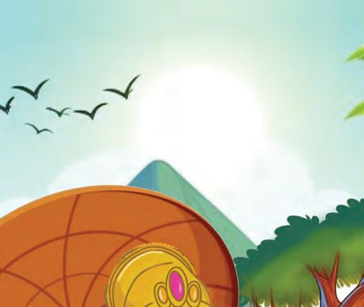
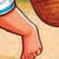
Page 61
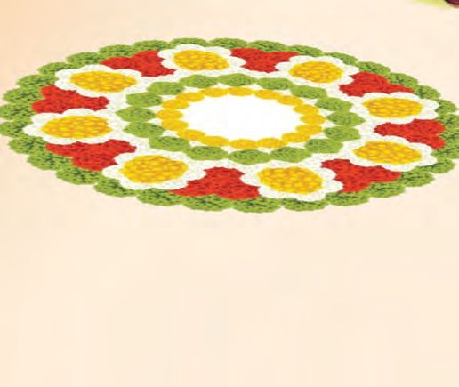
4 Joyful Onam
Onam in ten days, starting with atham.
61
Page 62
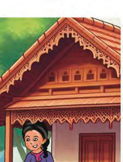
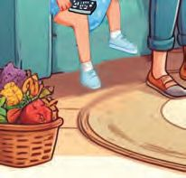
How about Onam with Grandma.
Nice!
Great! That‛ll be fun!
So good to see you kids!
Grandma!!
62
Page 63
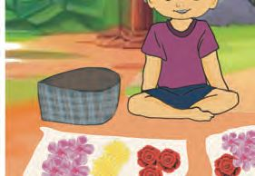
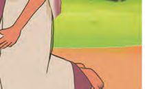
Pookkalam Neerav, Niya and grandma picked flowers for the pookkalam.
Count and write.
Neerav Oleander (അരളി)
Rose Jasmine (മു )
Chrysanthemum (ജമ ി)
Niya Oleander (അരളി)
Rose Globe amaranth (വാടാമ ി)
Grandma Jasmine (മു )
Globe Amaranth (വാടാമ ി)
Chrysanthemum (ജമ ി)
63
Page 64

They sorted the flowers into different baskets. How many of each? Rose Neerav brought 3 and 1, make four
3
Niya brought Total 3 + 1 =
Chrysanthemum (ജമ ി)
Neerav brought 2 and 2, make four
Grandma brought Total 2 + 2 =
Jasmine (മു )
Neerav brought 10 and 10, make twenty How many jasmine?
Grandma brought Total 10 + 10 =
Oleander (അരളി)
Neerav brought 10 and 4, make fourteen
Niya brought Total 10 + 4 =
Together they brought Globe Amaranth (വാടാമ ി)
Niya brought 6 and 3, make nine
64
Grandma brought Total 6 + 3 =
1 4
Page 65
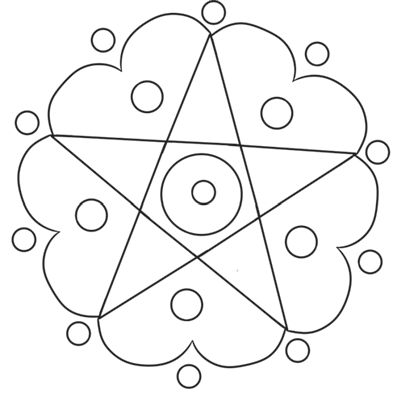
Father also bought some flowers. They drew an outline for the pookkalam. Colour it.
How many circles in this?
Let‛s make a garland. They made a garland with the remaining flowers. How many Chrysanthemum in the garland? How many roses?
How many Globe Amaranth?
Look at the pattern of flowers. Draw more flowers in the same pattern and color them.
Did you draw the same number of flowers? How many flowers in all?
65
Page 66
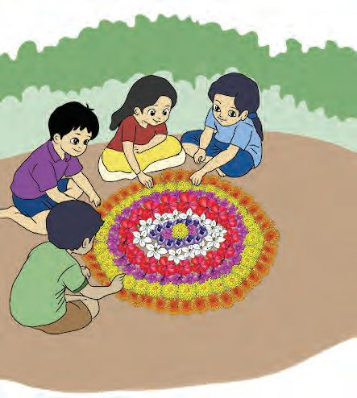
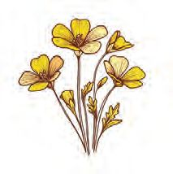
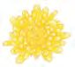
Neerav and friends sang.
A ring of roses Red and bright A ring of lilies Pure and white Mums and lotus And marigold Orange and i pink And shining gold Many a flower! Many a colour! Make a pretty Pookkalam Welcome, O King Maveli!
66
Page 67
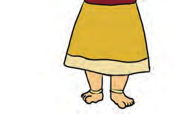
Bangles
Beautiful bangles.
What had grandma bought for Niya?
Niya is happy. She counted the bangles.
How many bangles?
6
+
6
=
Bangles in Hands. Can be worn in different ways. Different numbers on each arm. First day Second day Third day Fourth day Fifth day
67
Page 68
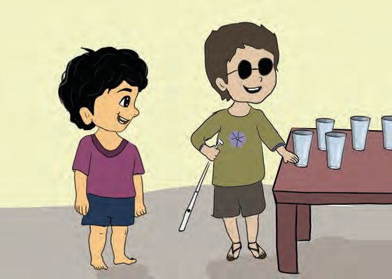
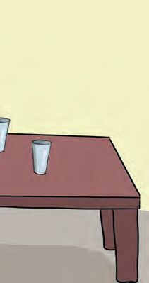
Ryan came for the Onam feast. He helped to count out the glasses. There‛s one more in front.
I counted out five.
5 and 1 make
5+1=
Neerav took out Niya took out Glasses
68
+
= 68
Page 69
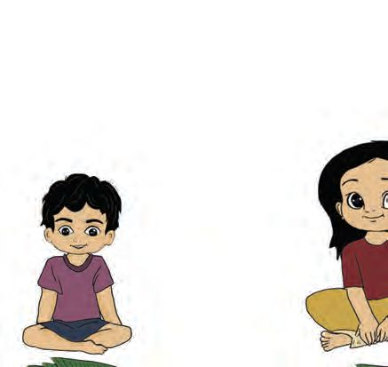
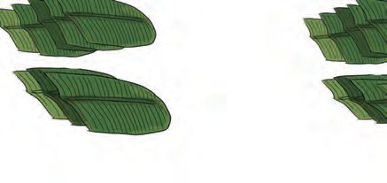
Neerav gave 3 glasses to Niya. Now Neerav has Niya has
glasses.
glasses.
They again exchanged glasses. How many glasses can each possibly have? My friend‛s calculation
My calculation Neerav
Neerav
Niya
Niya
Onam feast Relatives and neighbours came for
Shall we lay out the leaves?
the feast. Niya took
Neerav took
Total
+
=
69
Page 70
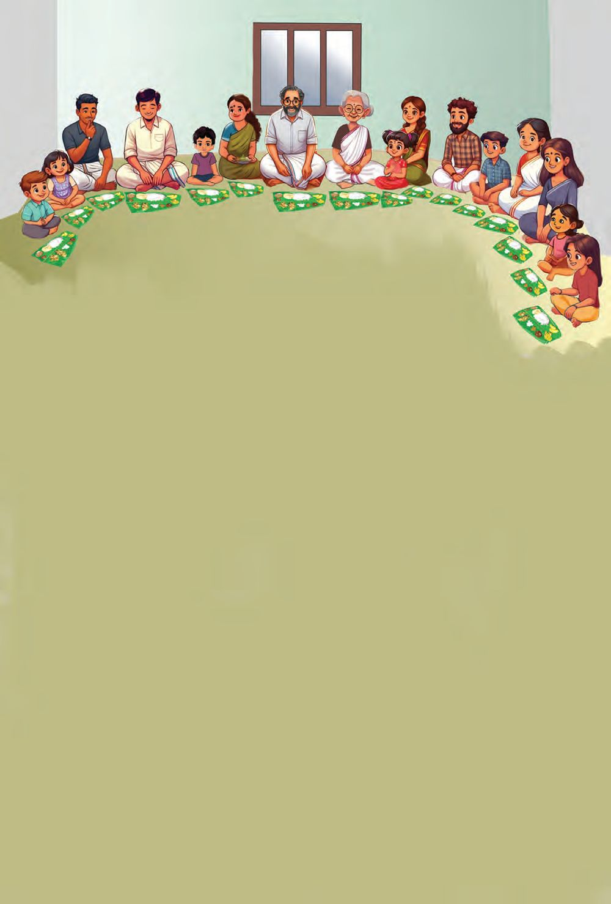
Onasadhya All sat down to eat. How many children? How many grown-ups? And altogether? Children ................ + ................ Grown-ups = ................ Numbers of leaves used for the feast Total number of leaves Neerav and Niya brought................................................ Are the leaves more or less?................................................................. How many?................................................
70
Page 71
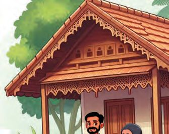
Sightseeing
After the feast, they set out for the park.
New cycle!
Cycles, we are two. How many wheels, can you tell?
+
=
2 and 2 make 4 Twice 2 is 4 Half of 4 is 2
71
Page 72

Autos, we are two.
+
= Cars we are two.
+ 72
=
How many wheels, can you tell?
3 and 3 make 6 Twice 3 is 6 Half of 6 is 3 How many wheels, can you tell?
4 and 4 make 8 Twice 4 is 8 Half of 8 is 4
Page 73
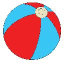
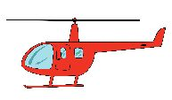
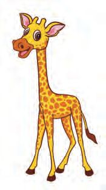
Niya‛s song Cows moo and moo One and one make two Tigers roar and roar Two and two make four Puppy licks and licks Three and three make six Giraffe standing straight Four and four make eight Lion is in his den Five and five make ten
Fill up the blank boxes. No. of Pictures
Double
Number
4
6
Double
14 8 9 20 73
Page 74
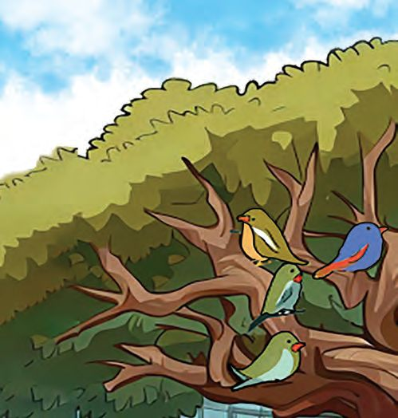
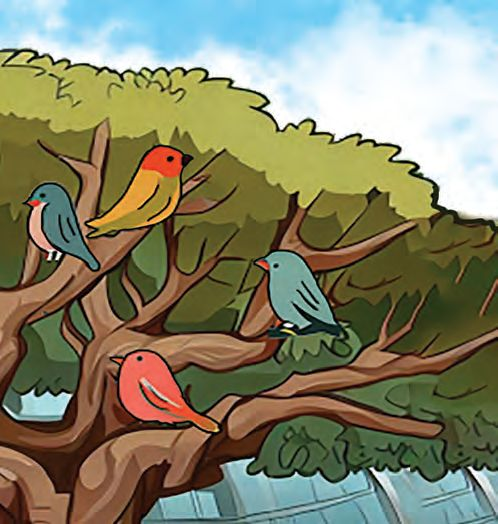
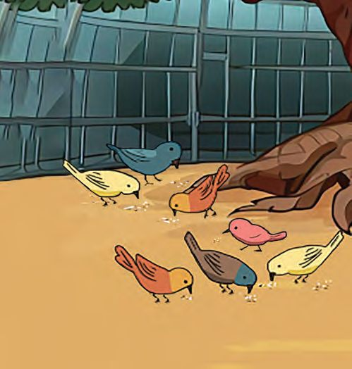
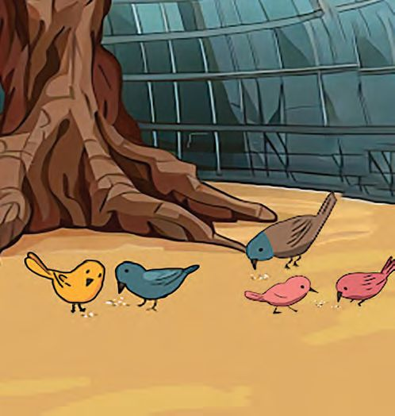
Birds How many birds in the tree? How many on the ground? How many in all?
+
=
Where are more birds, on the tree or in the ground? How many more?
74
-
=
Page 75
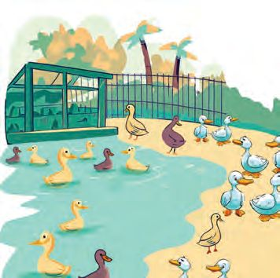
Ducks
How many ducks on the ground?
How many ducks in the water?
Where are more ducks, on the ground, or in the water? How many more?
-
=
3 ducks on the ground stepped into the water. 2 ducks in the water walked to the ground. Now how many in water? How many on the ground? How did you calculate?
75
Page 76
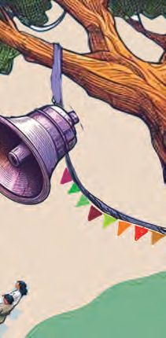
Onam-fest at the club All went to the Onam-fest at the club.
Musical chairs about to start! There are 13 children and 11 chairs. When the music stops, two without seats will be out of the game.
In the first time the music stopped, 2 were out of the game. How many kids remain? 2 chairs were also removed. Chairs remaining 2 were out in the next round also. And 2 more chairs were removed. Kids remaining
Chairs remaining
2 were out in the next round also. And 2 more chairs were removed. Kids remaining
76
Chairs remaining
You can play this with your classmates...
Page 77
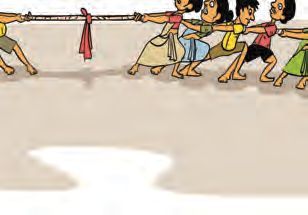
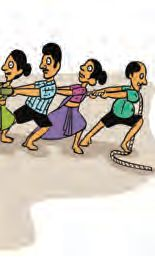
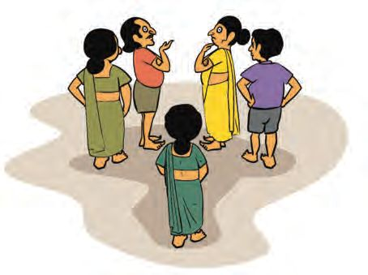
Tug of war
For tug of war, each team has 8 members. The programme ends with this competition.
How many in each team? How many in both teams together?
Go...Go... ...Go...
Come on!
We are only five.
How many more do they need to make a team?
77
Page 78
Bead threading There were 6 for this contest. See how many beads each threaded. Who threaded the most? Can you say without counting?
Nida Sachu
Diya
Jas
Mizhi
Nihal
How many beads did each thread? Now count and write... Nida
Sachu
Jas
Mizhi
Diya Nihal
Who won? Write the number of beads from the largest to the smallest.
78
Play this game in your class room...
Page 79
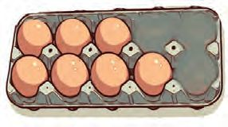
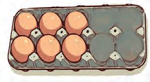
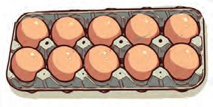
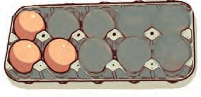
Ten and more How many eggs in each tray?
We want 10 eggs in the first tray. How many must be taken from the second tray?
7+3 = 10
3
7+6 = 7+3+3 = 10 + 3 10+3 = 13
How much is 9 + 7? Draw eggs in the cells and find out.
.............and .............make 10
9
+ 7 =
+
=
79
Page 80
Add and Remove 9 and 9 together give 18.
Taking away 2 from 11 makes 9.
Fill up the cells.
11
18 9
2
13
9
10 7
6
5 8
12
Trophies There are trophies for the winners of the contests. How many trophies.
80
+
=